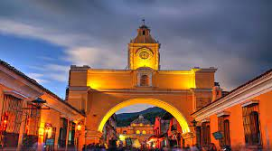
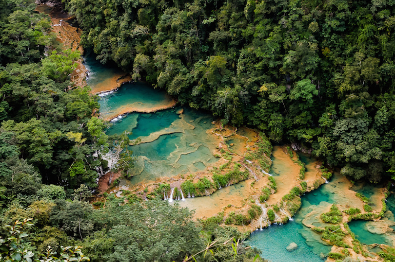
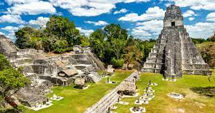
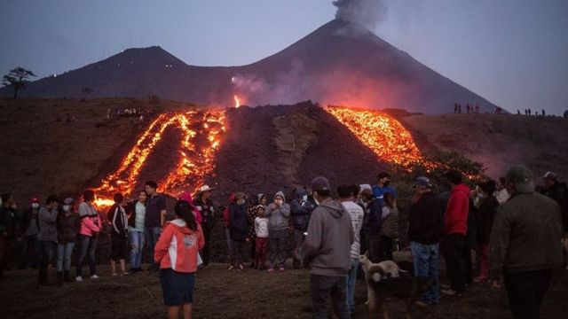

Algunos lugares turisticos mas reconocidos en Guatemala
Antigua Guatemala (Departamento de Sacatepéquez)

>
Semuc Champey (Departamento de Alta Verapaz)

Zona Arqueológica Tikal (Departamento de Petén)

Volcan Pacaya
